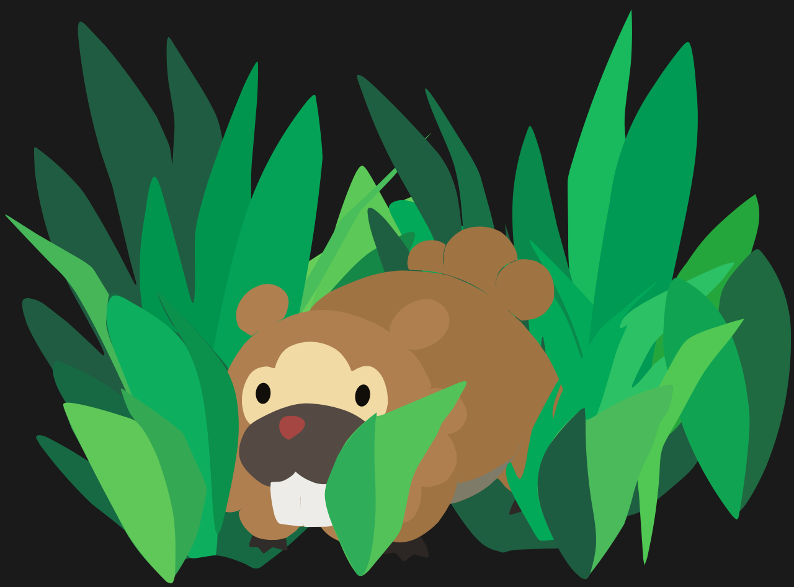

The Bidoof who saved a party

Spork, center stage, awaits capture in some tall grass - he's just along for the ride.
Here's a time line of Spork's life:
2019
Caught in Route 201
2019
Leaves his Poké Ball to level up, thanks to a nervous trainer known as JoCat
2019
Learns the move Rock Smash to smash rocks in Route 207
2019
Has to stop training to let SingulariT in the party. Hangs out in Box 1 which makes JoCat a little sad. I'm actually about to cry, he said. I'll be honest.
2019
Receives praise for being having Lax nature and often dozing off
2019
JoCat states we don't want to use Spork, because Spork will just make this easy mode. He proclaims we know Spork can just snap this entire gym.
2019
Dies at the level of 4.
Luckily it was not a Pokémon that we needed. It's just a Pokémon that makes things a lot better. Bidoof makes everything better when you play. Now everything just sucks.